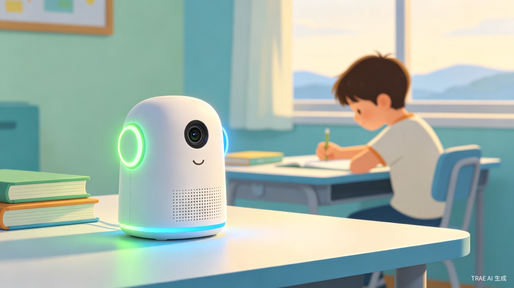
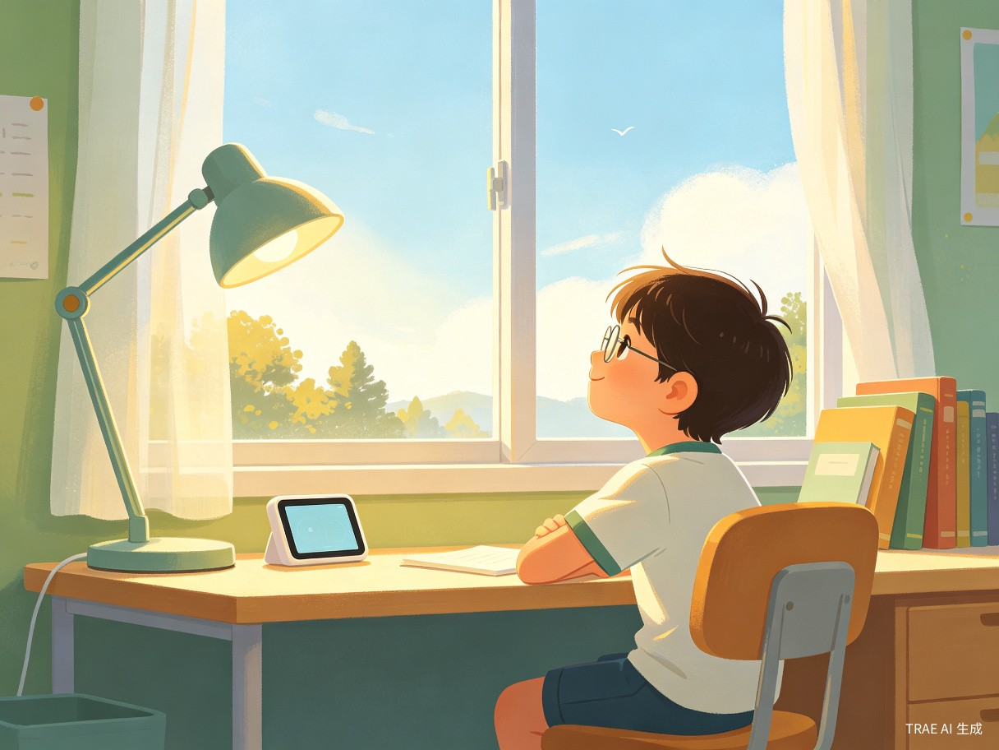
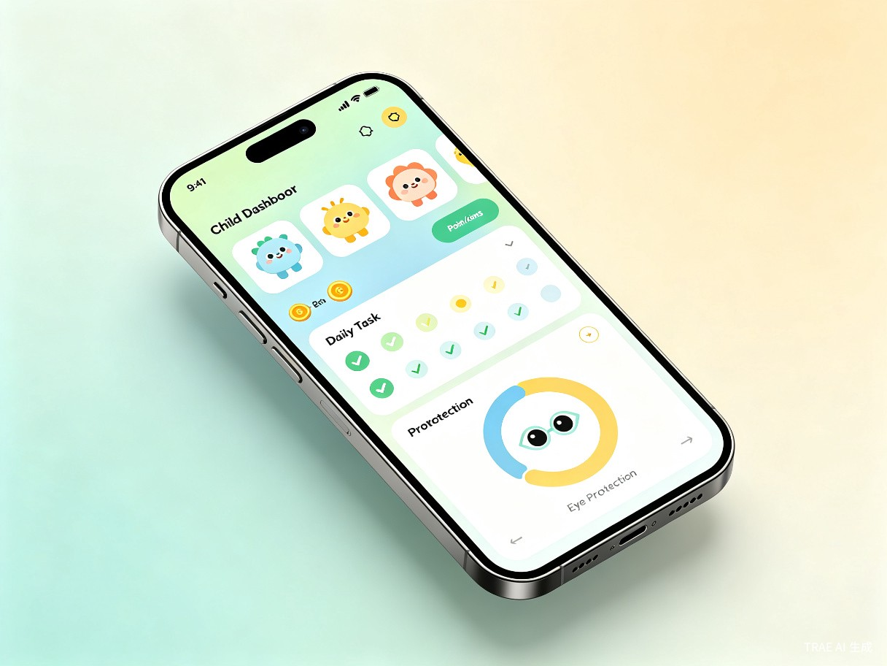

中国儿童青少年近视率已超 60%，且逐年攀升。眼科医生推荐的 20-20-20 护眼法则（每学习 20 分钟，看 20 英尺外物体 20 秒）是科学有效的预防手段，但孩子难以自觉坚持，家长也无法实时监督。现有产品大多是简单的定时闹钟，无法确认孩子是否真的执行了远眺动作。
作为一名家长，我深知督促孩子休息眼睛的无力感——设了闹钟孩子当作没听见，口头提醒又容易变成"唠叨"。我希望能有一个既有技术能力、又有情感温度的助手，代替家长完成这个"吃力不讨好"的监督工作，同时用游戏化激励让孩子从"被迫休息"变成"主动护眼"。
软硬件结合的智能护眼系统：一台放置在学习桌上的 AI 感知设备（含距离传感器、摄像头、环境光传感器、扬声器、LED 灯），通过蓝牙与手机 App 连接，自动检测孩子学习状态，智能提醒休息，并用家长录制的阶梯式语音和积分奖励机制帮助孩子养成护眼习惯。
正处于视力发育关键期，课业压力大，长时间近距离用眼，缺乏护眼意识和自制力。
关心孩子视力健康，但工作繁忙无法时刻监督，口头提醒容易引发亲子冲突。

近视一旦形成不可逆，高度近视还可能引发视网膜脱落、青光眼等严重并发症。通过技术手段帮助孩子养成科学的用眼习惯，是在疾病发生前进行有效干预，具有深远的社会公共卫生意义。据估算，如果护眼法则执行率从当前的不足 10% 提升到 80%，可有效降低儿童近视发生率约 30%。
对家长而言，不再需要充当"护眼警察"，亲子关系更和谐；对孩子而言，游戏化的积分激励和温和的语音提醒，让护眼从"被管"变成"自律"。设备还能同时监测坐姿、环境光、用眼距离，一台设备解决三大近视诱因。
中国 6-14 岁儿童约 1.5 亿人，家长对儿童视力健康的投入意愿强烈。当前市场缺乏真正"懂 AI、懂孩子、懂家长"的护眼硬件产品，存在明显的市场空白。产品可通过硬件销售 + 增值服务（如高级数据分析、多设备联动）实现商业闭环。
不同于普通闹钟只提醒"时间到了"，我们的设备通过摄像头 + 轻量 AI 模型实时检测孩子是否真正抬头看向远处（抬头角度 > 30°，持续 20 秒）。只有完成真正的远眺动作，才判定休息成功。这是市面上绝大多数护眼产品不具备的核心能力。
家长可在 App 中录制 5 级递进式语音：从第 1 次的温柔提醒"宝贝，该休息眼睛啦"，到第 5 次的严厉警告"再不休息要扣积分了"。孩子听到的是父母的声音，而非冰冷的机器音，接受度大幅提升。
完成一次 20-20-20 循环 +10 分，连续 5 天全完成 +50 分奖励，违规则扣分。积分可兑换家长设置的奖励（如"积满 100 分周末去公园"）。孩子从"被管"变成"为了奖励主动护眼"。
| 检测维度 | 传感器 | 检测内容 | 提醒方式 |
|---|---|---|---|
| 用眼距离 | ToF 距离传感器 | 检测孩子是否坐在桌前、距离是否过近 | LED 绿色流水灯 + 倒计时 |
| 远眺动作 | 摄像头 + AI | 检测是否抬头看向远处（>30°，持续20秒） | 蓝色呼吸灯 + 语音确认 |
| 坐姿监测 | 摄像头 + AI | 检测头部倾斜、肩膀水平度 | 黄色闪烁 + 坐姿提醒语音 |
| 环境光线 | 环境光传感器 | 检测桌面光照强度（300-750 lux为正常） | 黄色闪烁 + 调光提醒语音 |
所有数据本地存储在手机 SQLite 数据库，不上传任何云端；摄像头画面实时分析后立即丢弃，不做任何存储；设备配备物理摄像头遮挡盖，家长和孩子可随时关闭摄像头。用技术手段守护隐私，而非依赖企业的"承诺"。
硬件端搭载 ESP32-S3 芯片，核心护眼逻辑独立运行，不需要手机常驻连接。即使家长外出、手机没电，设备依然能完成检测和提醒，数据在下次连接时批量同步。
ToF 传感器检测到 0.3-1.0m 范围内有人持续存在 >= 5 秒，自动进入学习模式，绿色 LED 流水灯开始 20 分钟倒计时。
每 30 秒检测坐姿，每 60 秒检测环境光。如有异常，黄色 LED 闪烁 + 语音提醒。短暂离开（<2分钟）倒计时暂停保留。
20 分钟到，语音提醒"该休息眼睛啦"，LED 变为蓝色呼吸灯，启动 20 秒远眺检测。
摄像头检测孩子是否抬头看向远处。成功完成 20 秒远眺 → +10 积分，进入下一学习循环。未完成 → 播放阶梯语音提醒，记录违规。
通过蓝牙 LE 将数据同步到 App，家长查看今日学习/休息报告，孩子查看积分和任务进度。

家长布置每日学习任务，系统自动插入 20-20-20 休息点，孩子完成打卡。
学习时长、休息完成率、违规记录、历史趋势，数据驱动护眼。
完成休息赚积分，违规扣分，积分兑换家长设置的奖励。
家长录制 5 级递进语音，从温柔提醒到严厉警告，让机器也有温度。
| 对比维度 | 普通闹钟/定时器 | 手机护眼 App | AI 护眼桌面伴侣 |
|---|---|---|---|
| 检测入座 | ❌ 不支持 | ✅ 支持（依赖手机） | ✅ ToF 传感器精准检测 |
| 远眺确认 | ❌ 不支持 | ❌ 不支持 | ✅ AI 视觉检测确认 |
| 坐姿监测 | ❌ 不支持 | ❌ 不支持 | ✅ AI 实时检测 |
| 环境光检测 | ❌ 不支持 | ❌ 不支持 | ✅ 专用传感器 |
| 家长语音 | ❌ 不支持 | ❌ 不支持 | ✅ 5 级阶梯录音 |
| 积分激励 | ❌ 不支持 | ❌ 不支持 | ✅ 游戏化闭环 |
| 隐私保护 | ✅ 不涉及 | ⚠ 需摄像头权限 | ✅ 数据本地 + 物理遮挡盖 |
| 离线可用 | ✅ 支持 | ❌ 需手机常驻 | ✅ 硬件独立运行 |